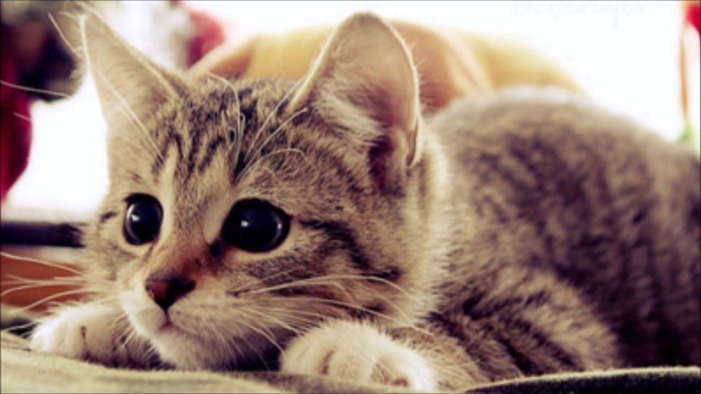

|
O bichano realiza esse malabarismo contando com a grande
sensibilidade dos receptores (estrutura interna do ouvido responsável pelo equilíbrio).
Sempre que o gato está em uma posição desconfortável, ocorre um aumento de pressão
na região, funcionando como alerta, assim, essa “mensagem de alerta” é enviada para
o sistema nervoso que manda vários sinais elétricos para o aparelho locomotor, em
especial, os músculos.Assim, os músculos, realizam uma série de movimentos instintivos
que fazem o corpo do animal recuperar o equilíbrio.
|

|